Reproducing the Spatial Delta Model for Accessibility
A complete walkthrough of the Spatial Delta Model — which separates
how much greenspace is there from how easily it can actually be reached and used,
and studies the gap between them — from raw data to manuscript, on the published Perth case.
R/ pipeline scripts · config/project-config.R ·
data/ (8,259 residential blocks with access, accessibility and their difference at
six walking times; 9,449 block polygons) · tests/ · run-all.R — unzip
and run Rscript run-all.R test from the SDM/ folder root.
To cite the SDM model and its R packages and codes in publications, please use:
Lin G, Song Y, Xu D, Swapan MSH, Wu P, Hou W, Xiao Z
(2024). Interpreting differences in access and accessibility to urban greenspace through
geospatial analysis. Int J Appl Earth Obs Geoinf 129:103823.
doi ·
PDF
Song Y, Wang J, Ge Y, Xu C (2020). An optimal parameters-based
geographical detector model. GIScience & Remote Sensing 57(5):593–610.
doi ·
OPGD tutorial
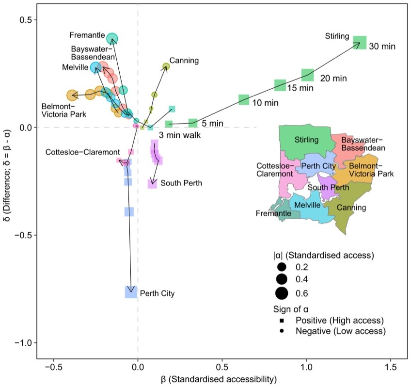
1 Method Overview & Reproduction Scope
1.1 Core Idea
Two neighbourhoods can have the same amount of parkland nearby and be entirely different
places to live. In one the park is across the road, uncrowded, easy to walk to. In the other the
same hectares sit behind a motorway, shared with ten thousand people. Counting the greenspace
cannot tell them apart.
The Spatial Delta Model takes that seriously by measuring both quantities and studying their
difference. Access (α) is how much greenspace is reachable within a walking time — a
count of supply. Accessibility (β) is how easy it is to actually reach and use, computed
with a floating catchment model that discounts supply by travel distance and shares it among
everyone competing for it. Both are standardised, and the model's subject is
δ = β − α
The sign is a diagnosis. Where δ > 0 the greenspace that exists is easy to reach
and lightly shared — the environment is doing more than its raw endowment suggests. Where
δ < 0 the greenspace is there on paper but hard to use. Neither is visible from α
or β alone.
Research problem: access and accessibility are routinely treated as the same thing,
so places where supply exists but cannot be used look identical to places where it can.
One-line contribution: SDM standardises both measures onto a common scale,
subtracts them, and turns the residual into a mapped, classifiable, explainable
quantity.
Why it matters: the gap is not noise. In the demo below it is spatially organised,
it reverses with the walking distance considered, and roughly a quarter of it is explained
by measurable features of the urban fabric.
Published reference · SDM
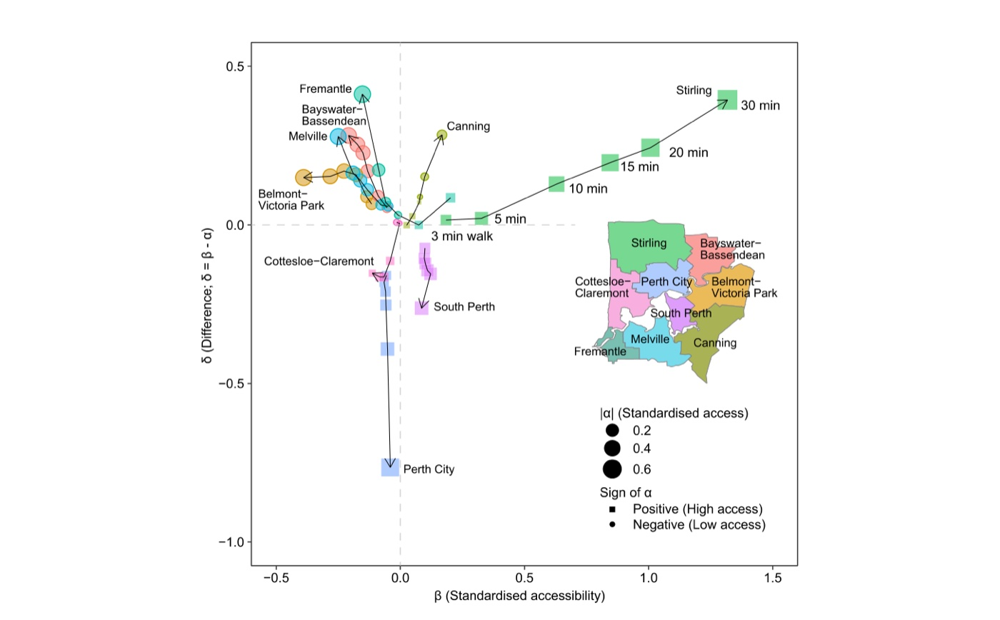
Paper Fig. 5 — every region's trajectory as the walking time grows from 3 to
30 minutes, in the plane of accessibility (β, horizontal) against the difference (δ,
vertical). Stirling climbs to the top right: plenty of greenspace, and increasingly easy to
use. Perth City falls to the bottom: greenspace is present, but at 30 minutes its
accessibility falls furthest short of its access. The demo reproduces both ends of that
ranking.
Lin, Song, Xu, Swapan, Wu, Hou & Xiao (2024), IJAEOG 129:103823 (CC BY).
◆Reader anchor
Count the greenspace within a walk (α) → measure how easily it can really be reached and
used (β) → put both on the same scale and subtract → map, classify and explain the
difference. Everything on this page serves that line.
✓What you need
R 4.1+ with sf, rpart, GD and ggplot2.
The Perth case data ship in this folder. The full pipeline takes about 15 seconds. One
optional extra, catchment, is needed only for the demonstration in
Step 2 that recomputes accessibility from the geometry.
1.2 Method Logic
SDM runs in four movements: measure the two quantities, difference them, classify the result,
and explain it.
1. Measureaccess α by counting supply within reach; accessibility β by MG2SFCA
Each greenspace is discounted by how far away it is and divided among the population that can
also reach it, so crowding and effort both enter. The decay f is Gaussian and truncated at
d₀.
The difference (δ) — both standardised, then subtracted. Standardising is what makes
the subtraction meaningful: α is an area and β is a ratio, so they are only comparable once
each is expressed in standard deviations of its own distribution.
Spatial scale — everything is computed at six walking times (3–30 minutes, at
5 km/h), because "within reach" is a choice, not a fact, and the answer changes with
it.
Explaining δ — each candidate variable is cut into spatial strata by a regression
tree, and the geographical detector scores how much of δ those strata account for (the Power
of Determinant). Every variable appears twice: as its own value, and in a
contextualised form carrying its local spatial pattern, so the analysis can say
whether what matters is the quantity at a place or its arrangement around it. The detector
is the same machinery as the OPGD tutorial.
Published reference · SDM
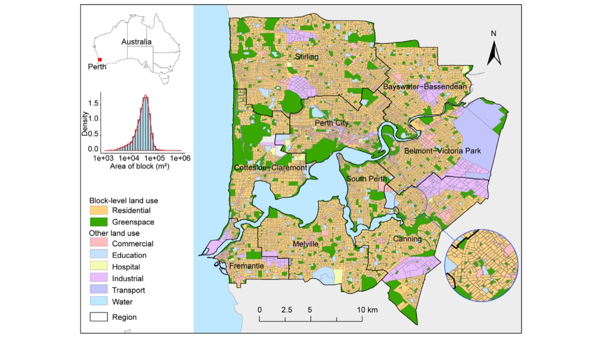
Paper Fig. 1 — the study area: block-level residential areas and greenspace across
metropolitan Perth, the case reproduced here.
1.3 Reproduction Scope
Everything tagged Demo run regenerates from this folder; everything tagged
Published reference is a static image from the article. It runs end to end
with R 4.6.0.
!What is reproduced, and what is demonstrated
The α and β values used from Step 3 onward are the authors' own, shipped in
data/mbvars.csv, so the delta, the classification and the driver analysis are
the published ones. Step 2 demonstrates how those two measures are produced by
recomputing them from the block geometry — but with straight-line distances, whereas the
published β used road-network distances built in QGIS. The demonstration therefore matches
the practical tutorial's printed figures, not the published columns; §3.2 gives the
correlations and §2.4 explains the network step.
Item
Demo template
Published reference
Data
8,259 residential mesh blocks with α, β and δ at six walking times, and 9,449
block polygons (data/)
the same Perth greenspace case
Method
catchment for the MG2SFCA demonstration; rpart +
GD for the driver analysis
Lin et al. (2024) §3, and the accompanying tutorial
paper Figs 1, 3, 4, 5, 6, 7 embedded as reference images
What the template regenerates versus what is shown as published reference.
How to use this page
To reproduce the demo:Rscript run-all.R test, then
Rscript run-all.R.
To apply SDM to your own city: §2.3 gives the data contract, §2.4 the network-distance
step, and §4.1 the porting checklist.
To understand the detector: the driver analysis in Step 4 uses the same
machinery as the OPGD tutorial, which covers it in
depth.
2 Setup, Structure & Data Contract
2.1 Environment & Dependencies
Four packages carry the pipeline. A fifth is needed only for the Step 2 demonstration,
and the step reports and continues without it.
R console
# The pipeline
install.packages(c("sf", "rpart", "GD", "ggplot2"))
# Only for the accessibility demonstration in Step 2. This one lives on GitHub.
install.packages("remotes")
remotes::install_github("uva-bi-sdad/catchment")
Package
Role in the pipeline
Required?
sf
block geometry, centroids, distances, the maps
yes
rpart
regression trees that cut each variable into spatial strata
Steps 4–5
GD
the geographical detector: Power of Determinant and interactions
Steps 4–5
ggplot2
the six figures
figures only
catchment
catchment_ratio() — the MG2SFCA demonstration
Step 2 only
Package roles. The environment is in env/session-info.txt.
2.2 Project Structure & Configuration
folder tree
SDM/
├── sdm.html # this guide
├── run-all.R # entry point: full run, single steps, figures, test
├── assets/ # figures shown in this guide (web copies)
├── config/project-config.R # the ONLY file to edit for a new city
├── R/
│ ├── 00-config.R, 01-helpers.R # paths, IO, column conventions
│ ├── 10-prepare-data.R # read the table and the geometry, check the identity
│ ├── 20-access-accessibility.R # how alpha and beta are produced (demonstration)
│ ├── 30-delta.R # delta, the green-city classification, by region
│ ├── 40-drivers-gozh.R # Power of Determinant at every walking time
│ ├── 50-interactions.R # pairwise interaction detector
│ ├── 90-tables.R # LaTeX tables + session info
│ └── p01 … p03 # figure scripts
├── data/
│ ├── mbvars.csv # 8,259 blocks: alpha, beta, delta + 12 variables
│ ├── blocks.gpkg # 9,449 polygons: 8,276 residential, 1,173 parkland
│ ├── regions.gpkg # the nine SA3 regions
│ └── provenance.md # where every file came from
├── tests/ # test-01 the published table; test-02 model properties
├── env/ # requirements.md, session-info.txt
├── results/ tables/ figs/ # generated output, never hand-edited
Main configuration file
config/project-config.R (key lines)
ANALYSIS_FILE <- "data/mbvars.csv" # alpha, beta, delta + explanatory variables
BLOCKS_FILE <- "data/blocks.gpkg" # consumers and providers, as polygons
ID_COL <- "MB_CODE21" # joins the table to the geometry
REGION_COL <- "SA3"
# "Within reach" is a choice, so the model is evaluated at six of them.
WALK_TIMES <- c(3, 5, 10, 15, 20, 30) # minutes
WALK_DISTANCES <- c(250, 417, 833, 1250, 1667, 2500) # metres, at 5 km/h
ACCESS_PREFIX <- "u" # alpha
ACCESSIBILITY_PREFIX <- "v" # beta
DELTA_PREFIX <- "df" # delta = beta - alpha
# Six variables, each also in a contextualised form carrying its local pattern
VARS_RAW <- c("popdenskm2","dwedenskm2","shapefacto",
"compactrat","neargsdist","neargsarea")
VARS_CTX <- c("lisav1","lisav2","lisav3","lisav4","lisav5","lisav6")
TREE_MINBUCKET <- 10 # smallest terminal node a stratifying tree may create
Parameter
Default
Origin / rationale
WALK_TIMES
3–30 min
the paper's Table 2; distances follow from 5 km/h, the standard pedestrian speed
TREE_MINBUCKET
10
the authors' value: strata smaller than ten blocks would score highly by chance
DEMO_TIME
3 min
the walking time the practical tutorial works through, so the demonstration can be checked against it
INTERACTION_TIME
5 min
a short walk, where the difference is most spatially organised
Free parameters and the published choices they follow.
2.3 Data Contract
SDM needs two things: a table with the two measures at each spatial scale, and the geometry
those measures were computed on.
File
Columns
Meaning
ANALYSIS_FILE
MB_CODE21, SA3
block identifier and region
u3 … u30
standardised access (α) at each walking time
v3 … v30
standardised accessibility (β)
df3 … df30
the difference (δ), and the model's subject
BLOCKS_FILE
MB_CATEGOR
which blocks are consumers (residential) and which are providers (parkland)
Person, AREASQKM21
demand and supply
Required schema. Column names and prefixes are declared in the config, not
hard-coded.
!The block identifier must be read as text
MB_CODE21 is an eleven-digit code. Read as a number it loses precision —
50021000000 becomes 5.0021e+10 — and silently stops matching the
geometry for a subset of blocks. The pipeline forces it to character on read, and
tests/test-01 checks that all 8,259 rows still find their polygon. It is worth
checking on your own data: the failure is quiet and costs you rows, not an error.
2.4 Network Distances: the Manual Step
One part of the published workflow is not in the pipeline, and cannot be: the distances behind
the published β are measured along the road network, not in straight lines, and the
network was built by hand in QGIS. It matters — a park two hundred metres away across a river is
not two hundred metres away — and it is why the demonstration in Step 2 does not reproduce
the published columns.
The accompanying tutorial documents the procedure. In outline:
Get the road network. In QGIS, install the QuickOSM plugin
(Plugins → Manage and Install Plugins), query OpenStreetMap for the highway
layer over the study area, and export it as a shapefile.
Build the origins and destinations. Residential block centroids are the origins,
greenspace centroids the destinations.
Run the network analysis. QGIS's routing tool takes the road layer, the origins and
the destinations, and returns a matrix of shortest-path distances along the network.
Bring it back into R. Export the result and pass it to
catchment_ratio() as the cost argument, in place of the
straight-line distances the function computes by default.
Published reference · tutorialSpecifying the residential points as origins and greenspace points as
destinations in the QGIS routing tool.Published reference · tutorial
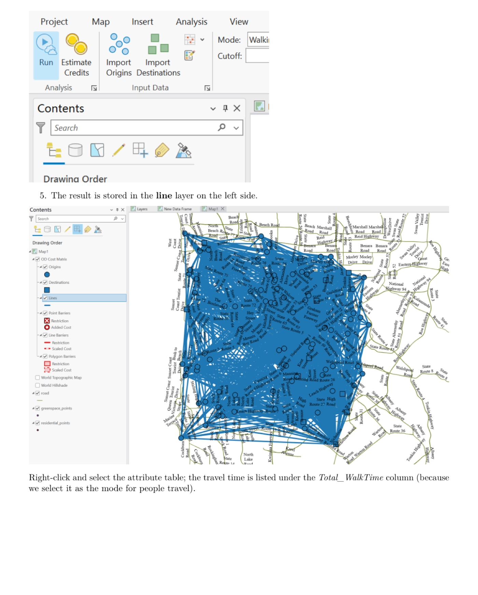
The resulting route layer, which is exported and used as the cost matrix in
place of straight-line distances.
✓Why this is worth the trouble
Straight-line distance flatters accessibility everywhere that movement is obstructed —
rivers, railways, motorways, cul-de-sacs — and those obstructions are exactly what
distinguishes access from accessibility. If you can only manage Euclidean distances, say so
plainly: the δ you compute will understate the gap in precisely the places the model exists
to find. One practical middle path is to run both and report the difference as a sensitivity
analysis.
3 Reproduction Pipeline, Results & Validation
3.1 Pipeline Execution
Full run
Rscript run-all.R (~15 s)
Verification
Rscript run-all.R test — do this first
Output folders
results/ tables/ figs/ data/derived/
terminal
cd SDM # this folder
Rscript run-all.R test # 1. check the published table is intact
Rscript run-all.R # 2. full pipeline
Rscript run-all.R 30 40 # re-run single steps (10 20 30 40 50 90)
Rscript run-all.R figures # only the figure scripts
Project : sdm-demo
Domain : urban greenspace, Perth
== Step 1/5 Prepare data ======================================
analysis table: 8259 residential blocks, 47 columns
regions: 9 (Bayswater-Bassendean, Belmont-Victoria Park, Canning ...)
scales: 3/5/10/15/20/30 minutes (250/417/833/1250/1667/2500 m) at 5 km/h
delta = accessibility - access holds to 1.0e-06 across all scales
geometry: 9449 blocks (8276 Residential, 1173 Parkland)
== Step 2/5 How access and accessibility are computed =========
access: greenspace area within 250 m; 34.6% of blocks reach any greenspace
accessibility: MG2SFCA with a Gaussian decay, median 0.010483
against the published columns: access r = 0.606, accessibility r = -0.076
== Step 3/5 The difference between accessibility and access ===
3 min: mean delta +0.000, 59.6% of blocks positive, cor(alpha,beta) = +0.749
30 min: mean delta -0.000, 47.9% of blocks positive, cor(alpha,beta) = +0.680
at 5 min: 52.1% positive, 10.9% near zero, 37.0% negative
at 5 min, highest delta: Bayswater-Bassendean (+0.091); lowest: Perth City (-0.181)
== Step 4/5 Drivers of the difference =========================
3 min: strongest is Distance to near greenspace (PD = 0.1161)
5 min: strongest is Contextualised distance to near greenspace (PD = 0.1157)
30 min: strongest is Region (PD = 0.2161)
30 min: all variables jointly explain PD = 0.4256 (12 strata)
== Step 5/5 Interactions between variables ====================
strongest pair: Area of near greenspace x Contextualised population density
-> PID = 0.2823 (Enhance, nonlinear)
singles reach at most PD = 0.1157, so the pair adds 144.0%
Finished in 15.1 s
3.2 Reproduce the Published Values
Three separate claims are checked, and they are not equally strong. Being clear about which is
which is the point of this section.
The published table is intact — checked
The α, β and δ values are the authors' own. What has to hold is that they survived the trip
into this folder and that the model's defining identity holds on them:
δ = β − α at all six scales, to 10⁻⁶ (the rounding of the shipped CSV), on
all 8,259 blocks, every one of which still matches its polygon.
Demo run
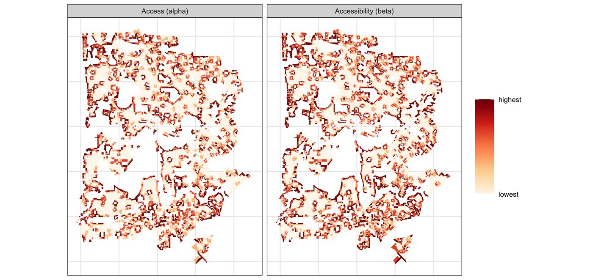
fig01 — the published α and β at a 3-minute walk, drawn from the table in this
folder. Two fifths of blocks tie at the bottom of both measures, so the shading is relative
standing rather than a value scale.Published reference · SDM
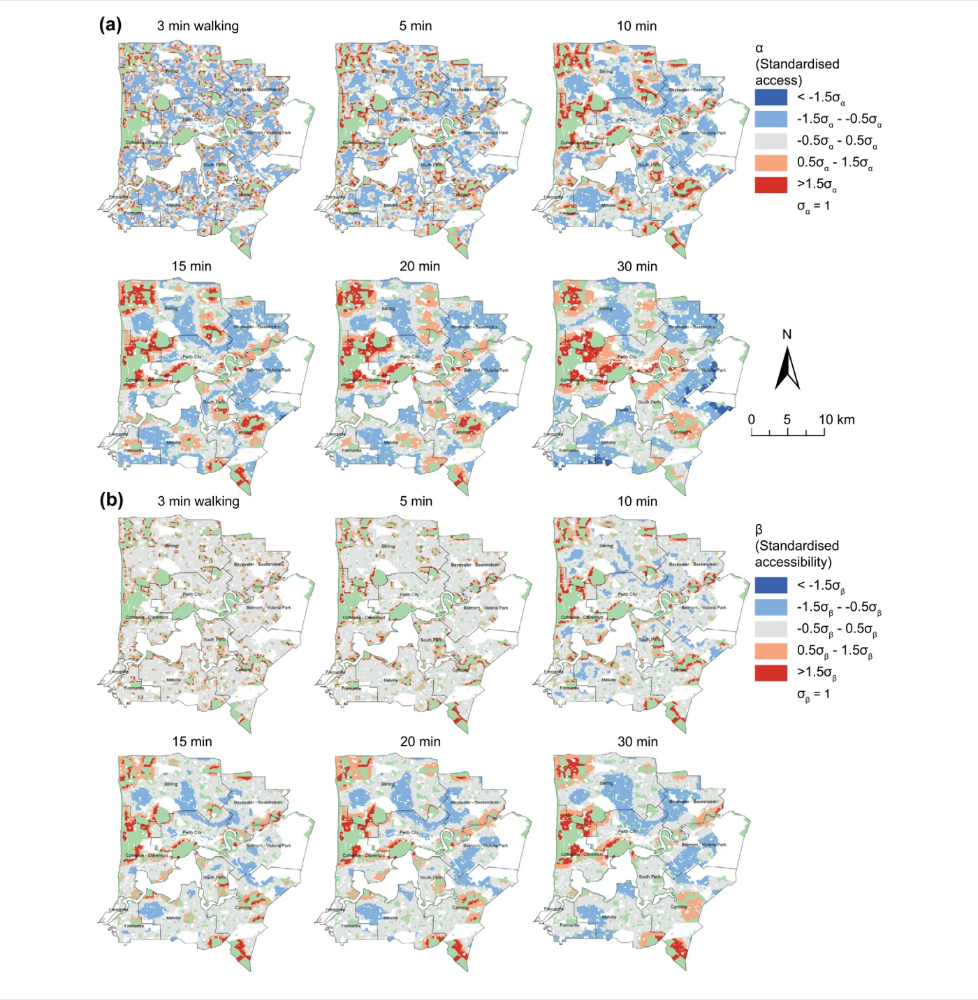
Paper Fig. 3 — the same two measures as the authors mapped them: (a) α and
(b) β, each at all six walking times, in standard-deviation classes.
The published findings are recovered — checked
The regional pattern falls out of the analysis rather than being asserted. At a 30-minute
walk the demo puts Perth City lowest at δ = −0.765 and Fremantle highest at
+0.412 — the two extremes of the paper's Fig. 5, at the values its axis shows
(reproduced in §1.1).
Demo run
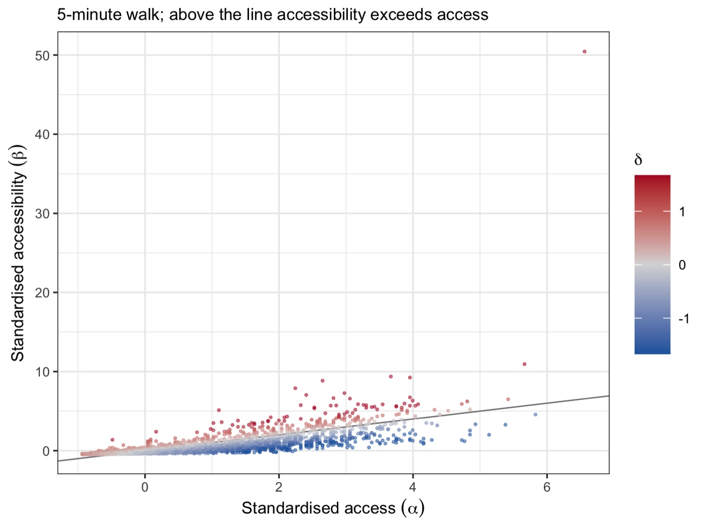
fig03 — every block in the access–accessibility plane at a 5-minute walk.
Above the diagonal accessibility exceeds access; the colour is δ itself. Click to
enlarge.
The measurement of α and β is demonstrated, not reproduced — stated plainly
Step 2 recomputes both measures from the block geometry. Against the published columns,
access correlates at r = 0.61 and accessibility at r = −0.08. The reason is
§2.4: the published β is built on road-network distances, and the demonstration uses
straight lines. The demonstration is faithful to the practical tutorial — it reproduces that
document's printed median of 0.0105 — but it is not the paper's β, and nothing downstream
uses it.
== test-01 The published analysis table ================================
8259 residential blocks, as published pass
nine SA3 regions pass
six walking times are present pass
delta = accessibility - access at every scale (max dev 1.0e-06) pass
access at 3 min is standardised (mean -0.00, sd 1.00) pass
access at 30 min is standardised (mean -0.00, sd 1.00) pass
six raw explanatory variables are present pass
six contextualised variables are present pass
every analysis row matches a residential block (8259 of 8259) pass
providers are present in the geometry pass
10 passed, 0 failed
PASS - the published analysis table is intact
== test-02 Model properties ============================================
delta is positive exactly when accessibility exceeds access pass
adding a constant to both leaves delta unchanged pass
delta changes sign when the two measures are swapped pass
perfectly separated strata give PD near 1 (1.000) pass
meaningless strata give PD near 0 (0.004) pass
no terminal node is smaller than minbucket (smallest 45) pass
distances follow 5 km/h to within 5 m pass
...
11 passed, 0 failed
3.3 Core Analytical Steps
Five stages: purpose → code → output → result → how to read it.
Step 1
Prepare data — and check the identity the model rests on
What this step does
Reads the analysis table and the block geometry, records what each column is, and confirms
that δ really is β − α at every walking time. That check is cheap and it is the one
thing that must be true for anything downstream to mean what it says.
Code
R — from R/10-prepare-data.R
d <- read_analysis()
# The identity the whole model rests on: delta must be beta - alpha
# at every walking time, or nothing downstream means what it says.
worst <- 0
for (t in WALK_TIMES) {
dev <- max(abs(d[[col_delta(t)]] -
(d[[col_accessibility(t)]] - d[[col_access(t)]])))
worst <- max(worst, dev)
}
if (worst > 1e-4) log_warn("delta does not match beta - alpha; check the input table")
Example output
== Step 1/5 Prepare data ======================================
analysis table: 8259 residential blocks, 47 columns
regions: 9 (Bayswater-Bassendean, Belmont-Victoria Park, Canning ...)
scales: 3/5/10/15/20/30 minutes (250/417/833/1250/1667/2500 m) at 5 km/h
delta = accessibility - access holds to 1.0e-06 across all scales
geometry: 9449 blocks (8276 Residential, 1173 Parkland)
joined 8259 of 8259 analysis rows to geometry
◆How to read this result
8,276 consumers and 1,173 providers. Residential blocks demand greenspace;
parkland blocks supply it. Every accessibility model needs that split stated
explicitly, because it decides what the model can see.
The identity is checked, not assumed. If δ and β − α ever drift
apart, some column has been transformed or misaligned, and every later number is
quietly wrong.
Step 2 · demonstration
Where access and accessibility come from
What this step does
Recomputes both measures from the geometry, so the two definitions are concrete rather
than assumed. Access is a sum of supply within reach; accessibility is a floating catchment
ratio that discounts supply by distance and divides it by the population competing for it.
Code
R — from R/20-access-accessibility.R
# access: the greenspace area within the walking distance
D <- sf::st_distance(consumer_centroids, provider_centroids)
alpha <- as.numeric((D <= d0) %*% providers$AREASQKM21)
# accessibility: MG2SFCA — supply discounted by distance, shared among demand
beta <- catchment::catchment_ratio(
consumers = consumer_centroids, providers = provider_centroids,
weight = "gaussian", consumers_value = "Person",
providers_value = "AREASQKM21", max_cost = d0, return_type = "region")
Example output
== Step 2/5 How access and accessibility are computed =========
demonstrating at 3 minutes = 250 m (5 km/h)
consumers: 8276 Residential blocks | providers: 1173 Parkland blocks
access: greenspace area within 250 m; 34.6% of blocks reach any greenspace
at this distance most blocks reach none, so access is zero for them —
a short walking time makes access a coarse, mostly-empty measure
access among blocks that reach some: median 0.0207 km2
accessibility: MG2SFCA with a Gaussian decay, median 0.010483
against the published columns: access r = 0.606, accessibility r = -0.076
◆How to read this result
Access is coarse at short distances, and that is the point. Within
250 m only 35% of blocks reach any greenspace at all; for the rest access is
simply zero. A measure that is zero for two thirds of a city cannot distinguish
between them — which is the gap accessibility is designed to fill.
Accessibility is never zero in the same way. The floating catchment
discounts distant supply rather than discarding it, so it grades where access only
counts.
The correlation against the published β is −0.08, and that number is the
lesson. Swapping network distances for straight lines does not perturb the
measure slightly; it produces a different measure. If you cannot build the network,
say so in the methods — do not present Euclidean accessibility as though it were
the same quantity.
Step 3 · the model
The delta, and the green-city classification
What this step does
Differences the two standardised measures at each walking time, classifies every block by
the sign of the result, and summarises by region. The near-zero class needs a band rather
than an exact value, since δ is continuous: one tenth of a standard deviation, which keeps
the classification comparable across scales.
Code
R — from R/30-delta.R
a <- d[[col_access(t)]]; b <- d[[col_accessibility(t)]]; dl <- d[[col_delta(t)]]
# Summarise the difference at each walking time
data.frame(walk_minutes = t,
mean_delta = mean(dl),
share_positive = mean(dl > 0),
share_negative = mean(dl < 0),
cor_access_accessibility = stats::cor(a, b))
# The green-city classification: a band of width sd/10 around zero is "zero"
eps <- stats::sd(dl) / 10
k <- ifelse(dl > eps, "positive", ifelse(dl < -eps, "negative", "zero"))
Example output
Walk
Distance
δ > 0
δ ≈ 0
δ < 0
cor(α, β)
3 min
250 m
55.7%
8.3%
36.0%
+0.749
5 min
417 m
52.1%
10.9%
37.0%
+0.716
10 min
833 m
51.1%
10.6%
38.3%
+0.745
15 min
1250 m
49.1%
11.9%
39.0%
+0.709
20 min
1667 m
47.2%
10.4%
42.4%
+0.711
30 min
2500 m
43.2%
9.6%
47.2%
+0.680
results/green-city-classification.csv and
delta-summary.csv. The majority flips: at a three-minute walk most blocks have
accessibility ahead of access; at thirty minutes most have fallen behind.
Demo run
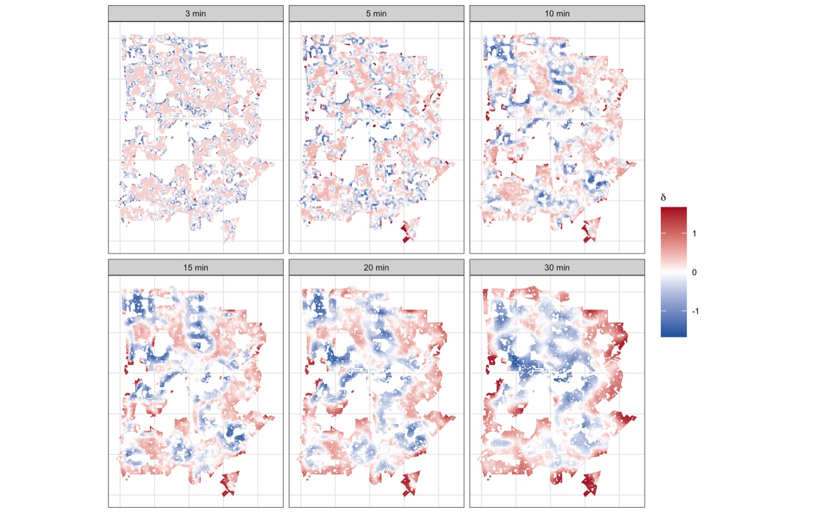
fig02 — δ at each walking time. Red is accessibility ahead of access, blue
behind. The pattern is faint at three minutes and hardens into coherent districts as the
distance grows.Published reference · SDM
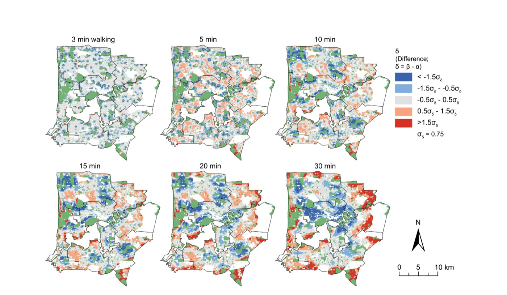
Paper Fig. 4 — the published δ maps for the same case.
Demo run
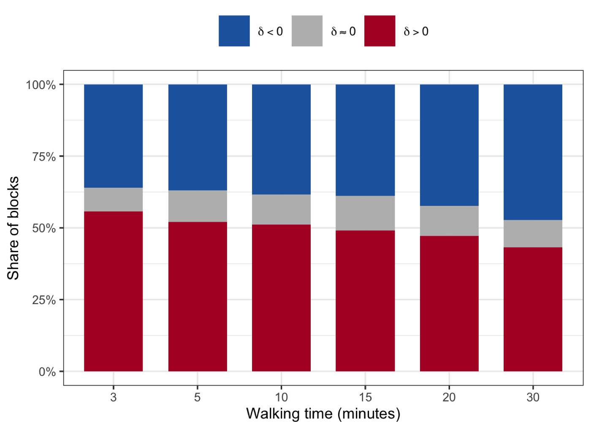
fig04 — the classification shares, and the crossover between 20 and
30 minutes.
◆How to read this result
The crossover is the headline. Positive blocks fall from 55.7% to 43.2% as
the walk lengthens, and negative ones rise past them. Close to home, Perth's
greenspace is easier to use than its bare quantity suggests; over a half-hour walk
the opposite holds. A single-distance study would have found one of these and
missed that it reverses.
α and β correlate at about +0.7, not +1. They are measuring related things —
which is why differencing them is meaningful rather than trivial — but roughly half
the variance is not shared, and that half is what δ isolates.
Perth City is the clearest case. Lowest δ at every scale, reaching −0.765
at thirty minutes: the city centre has greenspace, but it is distant, contested and
hard to reach relative to how much is nominally there.
The near-zero band is a choice, so it is stated. One tenth of a standard
deviation; about a tenth of blocks land in it. Widen it and the story becomes
"mostly neutral", narrow it and the neutral class vanishes — report whichever you
use.
Step 4
What explains the difference
What this step does
Each variable is cut into spatial strata by a regression tree, and the geographical
detector scores how much of δ those strata explain. Every variable is tested twice: as its
own value, and in a contextualised form carrying its local spatial pattern.
Code
R — from R/40-drivers-gozh.R
# the variable is continuous, so a tree turns it into spatial strata
tr <- rpart::rpart(df ~ v, data = dd, minbucket = TREE_MINBUCKET)
dd$strata <- as.character(as.numeric(tr$where))
# then the detector scores how much of delta those strata account for
g <- GD::gd(df ~ strata, dd) # g$Factor$qv is the Power of Determinant
Example output
Demo run
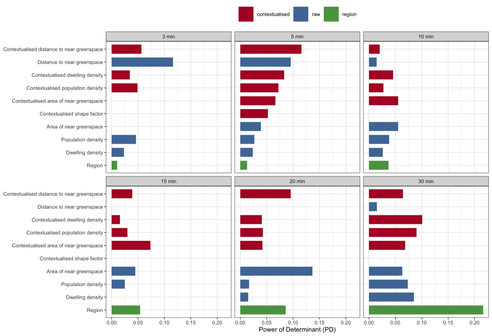
fig05 — Power of Determinant for every variable at every walking time.
Blue is the raw variable, red its contextualised form, green the region.Published reference · SDM
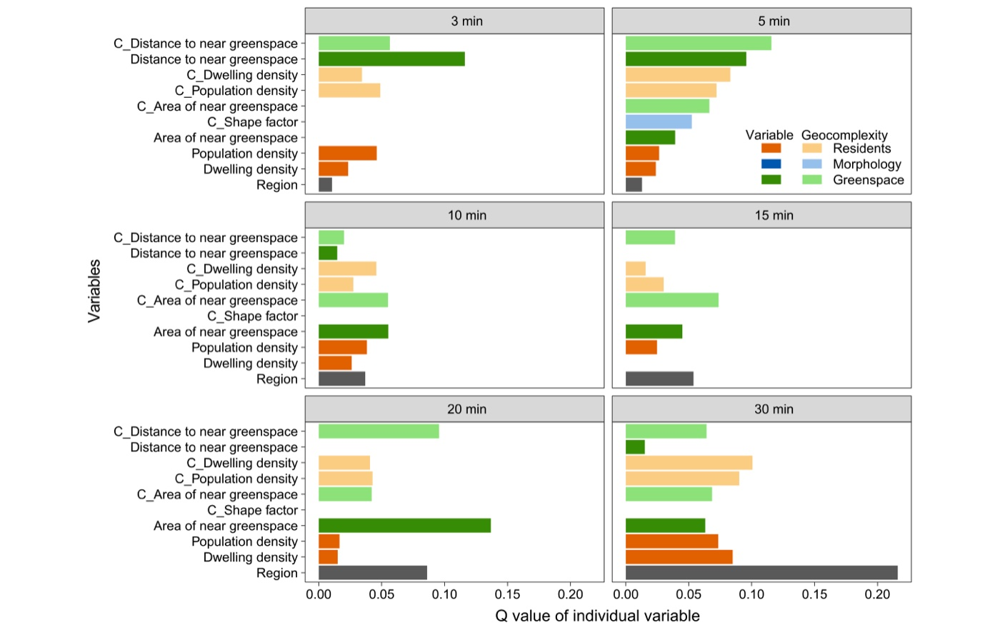
Paper Fig. 6 — the published counterpart, the same quantity across the same
six spatial scales.
Walk
Strongest single variable
PD
All variables jointly
3 min
Distance to near greenspace (raw)
0.116
0.262
5 min
Distance to near greenspace (contextualised)
0.116
0.235
10 min
Area of near greenspace (raw)
0.055
0.197
15 min
Area of near greenspace (contextualised)
0.074
0.272
20 min
Area of near greenspace (raw)
0.137
0.250
30 min
Region
0.216
0.426
results/drivers-pd.csv and drivers-total-pd.csv.
◆How to read this result
What drives the gap changes with the distance considered. At a three-minute
walk it is how far the nearest park is. By thirty minutes the strongest single
predictor is simply which region you are in (PD 0.216) — at that range the
difference is a property of urban structure at the district scale, not of the
individual block.
Arrangement often beats quantity. The contextualised forms outscore their
raw counterparts at four of the six scales. How greenspace and population are
patterned around a block explains the access–accessibility gap better than
how much of each there is — which is what the difference was built to
capture.
Together they explain a fifth to two fifths. Jointly, PD runs 0.197 to
0.426, highest at thirty minutes. Most of δ remains unexplained by these twelve
variables, and reporting that honestly is better than implying the gap is
solved.
Region is weak at short range and dominant at long. PD 0.013 at five
minutes against 0.216 at thirty: administrative geography says almost nothing about
your walk to the nearest park, and a great deal about your access to the city's
greenspace as a whole.
Step 5
Interactions — pairs that explain more together
What this step does
Overlays each pair of stratifications and scores the combined zones, classifying the pair
into the five standard interaction types.
Code
R — from R/50-interactions.R
# Each variable becomes spatial strata through a tree fitted against delta
strata_of <- function(x) {
if (is.character(x) || is.factor(x)) return(as.character(x))
tr <- rpart::rpart(df ~ v, data = data.frame(df = y, v = x),
minbucket = TREE_MINBUCKET)
as.character(as.numeric(tr$where))
}
# Power of Determinant of one stratification, and of a pair combined
pd_strata <- function(s)
as.numeric(GD::gd(df ~ strata, data.frame(df = y, strata = s))$Factor$qv)
single <- vapply(lapply(vars, strata_of), pd_strata, numeric(1))
Example output
Variable 1
Variable 2
PD₁
PD₂
PID
Type
Area of near greenspace
Contextualised population density
0.039
0.072
0.282
Enhance, nonlinear
Region
Contextualised distance to near greenspace
0.013
0.116
0.248
Enhance, nonlinear
Contextualised dwelling density
Contextualised distance to near greenspace
0.083
0.116
0.208
Enhance, nonlinear
results/interaction-pid.csv at a 5-minute walk, strongest three of
45 pairs. Of the 45, 28 are nonlinear-enhance, 13 bi-enhance and 4 uni-weaken.
Demo run
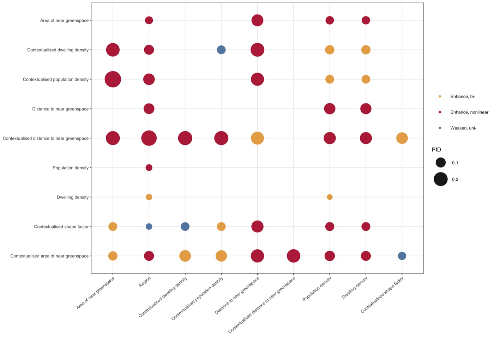
fig06 — every pair, sized by joint explanatory power and coloured by
interaction type.
◆How to read this result
The best pair more than doubles the best single. PID 0.282 against a
strongest single PD of 0.116 — a gain of 144%. Greenspace area and population
pattern say far more about the gap jointly than either says alone, which is exactly
what you would expect of a measure built from supply and competition.
Nonlinear-enhance dominates: 28 of 45 pairs. The joint effect exceeds the
sum of the parts. These variables are not independent contributions to be added up;
they condition each other.
Region is weak alone but strong in company. PD 0.013 by itself, PID 0.248
paired with contextualised distance — the district matters, but only once you know
the local greenspace geography within it.
3.4 Reading the Results Together
The gap is real
α and β correlate at only
~0.7, and 37–47% of blocks have accessibility falling short of access.
It reverses with distance
55.7% of blocks
are positive at a 3-minute walk, 43.2% at 30 — the majority flips.
And it is explainable
Jointly PD 0.20–0.43;
nearest-greenspace geometry rules the short walk, region the long one.
Published reference · SDM
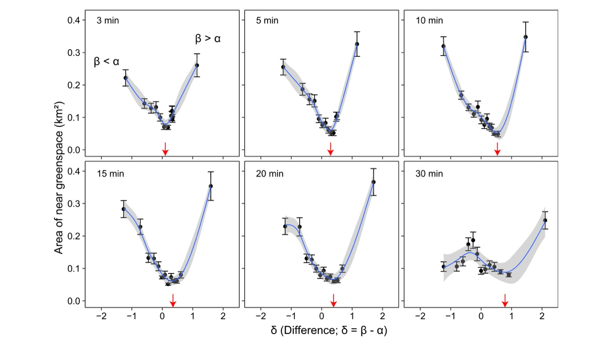
Paper Fig. 7 — how the difference relates to the area of the nearest greenspace
across spatial scales, the published view of the scale dependence the demo finds in its driver
table.
◆How to interpret — several angles
Mechanism. Access counts supply; accessibility divides discounted supply by the
demand competing for it. So δ is negative wherever greenspace is distant, obstructed or
crowded relative to its quantity, and positive where a modest amount of parkland is
close, unobstructed and lightly shared. The gap is a statement about urban form, not
about hectares.
Why the reversal matters for policy. Near home, Perth's greenspace works better
than its quantity implies; at half an hour it works worse. A programme judged at one
distance can look like a success or a failure depending on a choice nobody
examined — so report the whole curve, as the model does.
Decision angle. Negative δ and low α call for new greenspace. Negative δ with
high α calls for something else entirely — crossings, paths, entrances,
maintenance — because the hectares are already there. Distinguishing those two cases is
the practical payoff, and neither α nor β alone can do it.
What SDM is not. It is not a measure of greenspace quality, and δ near zero is
not a clean bill of health: it means the two measures agree, which can happen in a
place with plenty of easily-reached parkland or with almost none. Read δ next to α, as
the paper's Fig. 5 does, not on its own.
Honest limits. The published β needs road-network distances that are built by
hand (§2.4); the demonstration here uses straight lines and correlates at −0.08 with
the published values, which is the size of the error that shortcut introduces. Twelve
variables explain at most 43% of δ. And the classification's neutral band is a
convention, not a finding.
◆Reading order for your own run
1) Step 1's identity check — δ must equal β − α, or nothing else counts.
2) results/delta-summary.csv — how far α and β actually diverge, and whether the
balance shifts with distance. 3) results/delta-by-region.csv — which places sit
at the extremes, and whether that is plausible on the ground.
4) results/drivers-pd.csv — what explains the gap, and whether arrangement beats
quantity. 5) results/interaction-pid.csv — which pairs act together.
4 Adaptation, Writing & Reproducibility
4.1 Port to Your Domain
Nothing in the model is specific to greenspace. It needs a service that people travel to, a
population that travels to it, and a way of measuring the journey. Swap those three and the
method is unchanged:
Domain
Consumers
Providers
What δ would mean
Urban greenspace (this demo)
residential blocks, by population
parkland, by area
parks that exist but cannot be used
Primary healthcare
population by age band
clinics, by capacity
coverage on paper versus in practice
Schools
school-age children
schools, by places
catchments that look adequate but are not
Food retail
households
supermarkets, by floorspace
food deserts hidden by nominal proximity
Any supply–demand pair with a travel cost between them fits the contract of
§2.3.
What to edit
config/project-config.R — the three data paths, ID_COL and
REGION_COL, and the consumer and provider categories with their demand and
supply fields.
WALK_TIMES and WALK_DISTANCES — the scales that matter for your
service. A clinic is not a park: the relevant range may be a drive rather than a walk, in
which case set the distances from the appropriate speed and say so.
VARS_RAW and VARS_CTX — the candidate explanations, in both
plain and contextualised form if you have them.
Compute α and β for your own case (Step 2 shows the shape of it; §2.4 covers the
network distances), write them into the analysis table under the configured prefixes, and
the rest of the pipeline runs unchanged.
!Common pitfalls
Standardise α and β before differencing — they are an area and a ratio, and subtracting
them raw is meaningless. Keep identifier columns as text, or long numeric codes will silently
fail to join. Do not read δ without α beside it: zero means "the two agree", which is a very
different situation in a park-rich suburb than in a park-poor one. Report the walking-time
curve rather than one distance, because the balance genuinely reverses. And if you use
straight-line distances, state it — §3.2 shows what that costs.
define access and accessibility with their formulas, state the walking times and the speed behind them, the distance basis (network or straight-line), and the standardisation before differencing
map α and β, then δ; report the classification across scales including the crossover; then the drivers and their interactions; every finding sentence carries a number
Discussion
results/delta-by-region.csv, drivers-total-pd.csv
argue what a negative δ implies for policy where α is high versus low, and how much of the gap remains unexplained
Where each manuscript section draws its material from.
Manuscript skeleton
manuscript outline
1 Introduction — access is not accessibility; why the gap matters;
the contribution (3 aims)
2 Spatial Delta Model — 2.1 Access (alpha): supply within reach
2.2 Accessibility (beta): MG2SFCA, all formulas here
2.3 The difference (delta) and its interpretation
2.4 Spatial scales, and the distance basis
3 Case & data — study area, consumers, providers, explanatory variables
4 Results — 4.1 access and accessibility mapped
4.2 the difference, and how it changes with distance
4.3 the green-city classification by region
4.4 what explains the difference (PD by scale)
4.5 interactions between explanations
5 Discussion — high-alpha vs low-alpha negatives; the scale reversal;
what remains unexplained; distance-basis limitations
6 Conclusions — 6-8 sentences answering the aims
Results-to-manuscript map
Manuscript element
Source file
Shown in
Access and accessibility maps
figs/fig01
§4.1
Main figure (δ across scales)
figs/fig02
§4.2
The α–β plane
figs/fig03
§4.2
Classification shares
figs/fig04, tables/table-classification.tex
§4.3
Drivers by scale
figs/fig05, tables/table-drivers-pd.tex
§4.4
Interactions
figs/fig06, tables/table-interactions.tex
§4.5
Every manuscript element traces to one regenerable file.
4.3 Final Reproducibility Package
Code
numbered scripts in R/ + run-all.R + config/project-config.R + tests/
Data
data/mbvars.csv, blocks.gpkg, regions.gpkg, with provenance.md
Rscript run-all.R test passes — 21 checks, including the model identity at
every scale and the full 8,259-row join.
Delete results/, tables/, figs/ and
data/derived/, re-run Rscript run-all.R — every number and
figure on this page regenerates (~15 s).
The walking times, the speed behind the distances, the distance basis
(network or straight-line) and the tree's minimum node size are stated in the
manuscript and match config/project-config.R.
α and β are reported as standardised, and the classification's neutral band is
defined.
env/session-info.txt is included in the deposit.
◆Anticipate the reviewer
Isn't δ just noise from two noisy measures? → no: α and β correlate at ~0.7, δ is
spatially organised (figs/fig02), and a fifth to two fifths of it is explained
by measurable urban form. Why that walking time? → all six are reported, and the
balance reverses between them. Euclidean or network distance? → §2.4, and §3.2 shows
the −0.08 correlation that shortcut produces. Is the neutral class arbitrary? → yes,
it is a convention; it is defined and its width stated. Does region just proxy for
everything? → no: PD 0.013 at five minutes, 0.216 at thirty.
References & credits
Demo outputs were generated by the scripts in this folder from the
authors' own analysis table. Reference figures are reproduced from the article, which is open
access under CC BY, and from the accompanying practical tutorial.
Lin G, Song Y, Xu D, Swapan MSH, Wu P, Hou W, Xiao Z (2024). Interpreting differences in
access and accessibility to urban greenspace through geospatial analysis.
International Journal of Applied Earth Observation and Geoinformation 129:103823.
doi:10.1016/j.jag.2024.103823
· PDF
(source of the method, the case data, and the Fig. 1, 3, 4, 5, 6 and 7 reference
images)
Delamater PL (2013). Spatial accessibility in suboptimally configured healthcare systems:
a modified two-step floating catchment area (M2SFCA) metric.
Health & Place 24:30–43.
doi:10.1016/j.healthplace.2013.07.012
(the accessibility model behind β)
Song Y, Wang J, Ge Y, Xu C (2020). An optimal parameters-based geographical detector model.
GIScience & Remote Sensing 57(5):593–610.
doi:10.1080/15481603.2020.1760434
· OPGD tutorial
(the detector used in Steps 4 and 5)
The catchment R package
(Social and Decision Analytics Division, University of Virginia) — used for the MG2SFCA
demonstration in Step 2.